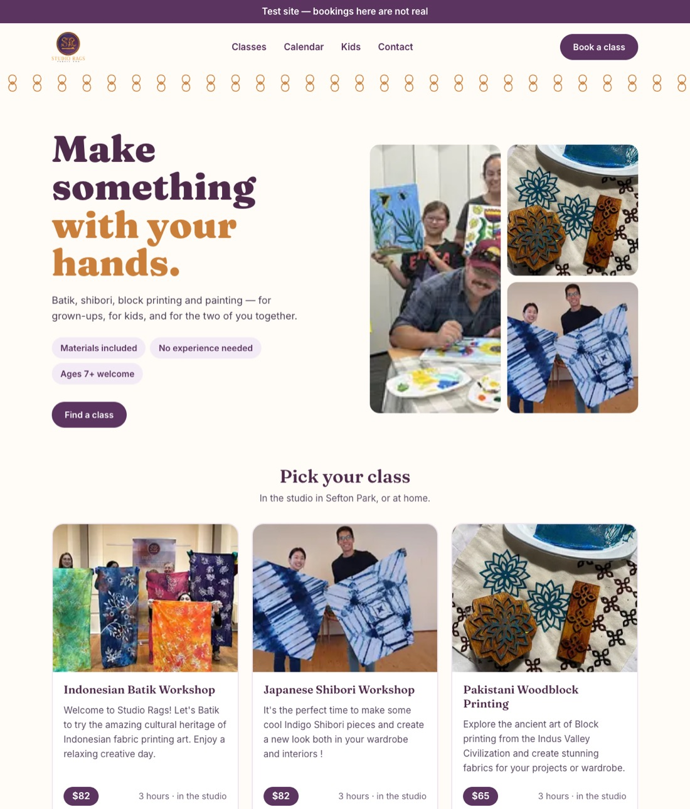
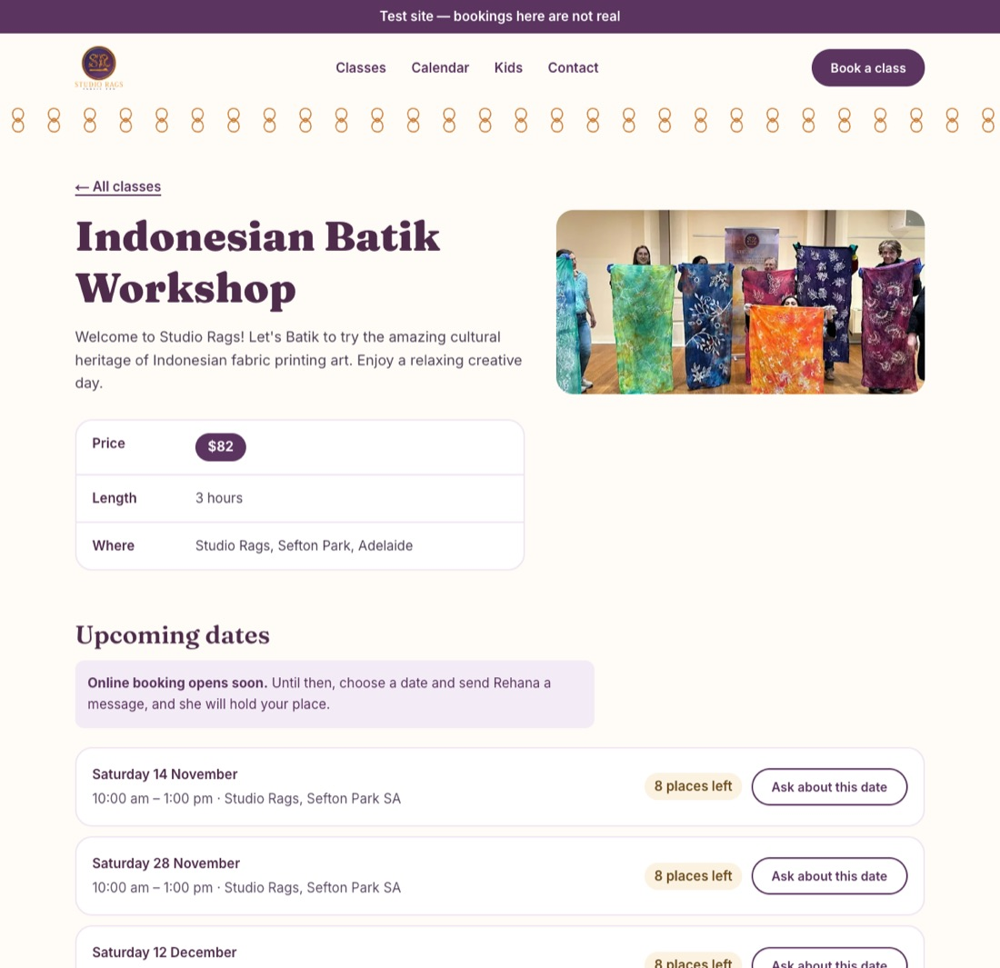
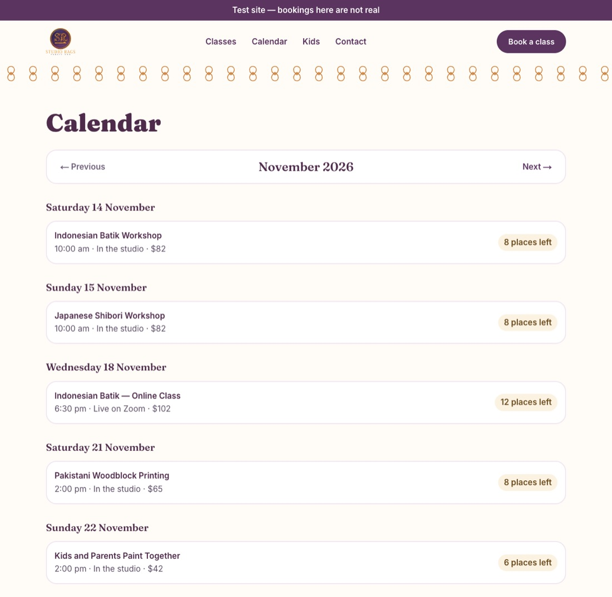
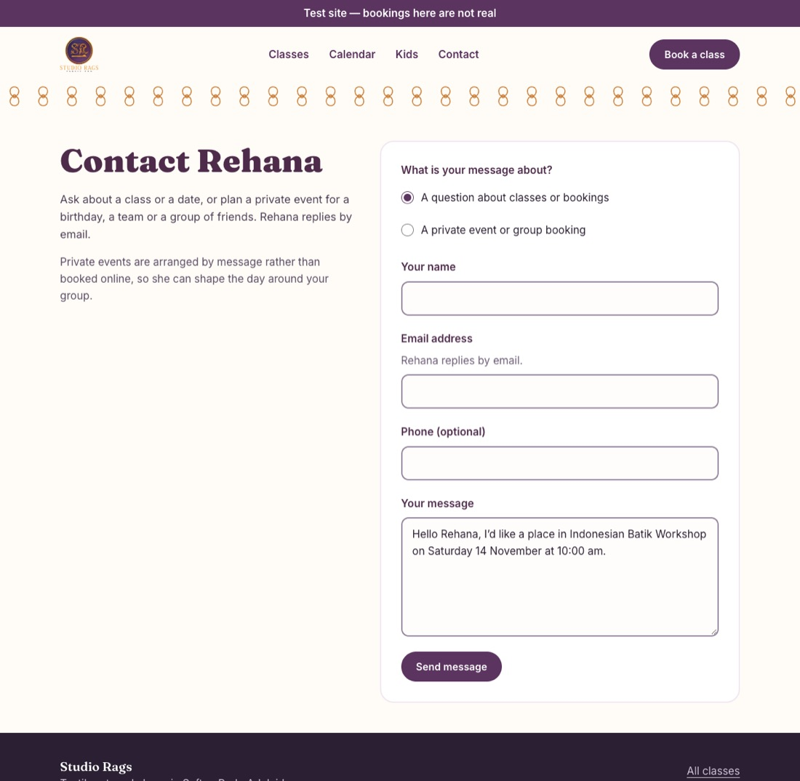

Studio Rags · Phase 2 · 7 November 2026
The public site is up.
Visitors can now browse Rehana's classes, see real dates with live seat counts, and send her a message. Online booking and payment come next, in Phase 3.
- 6 classes
- 6 pages
- 5 API endpoints
- 551 backend tests, 29 frontend tests
What changed, in screenshots




How a visit works
- A visitor opens a class page, and the Next.js site asks the API for that class and its dates.
- The API reads Postgres and counts the seats taken by confirmed bookings and by unexpired holds. That is one query for all dates.
- The site builds the page and keeps the API's answer for 60 seconds, so the next visitors are served quickly.
- Once the page loads, the browser fetches the dates again, uncached, so “places left” is current.
- The contact form posts straight from the browser to the API, which saves the message for Rehana.
Show me the code: counting seats
backend/src/catalogue/availability.ts
export function seatHoldingBookings(now: Date): Prisma.BookingWhereInput {
return {
OR: [
{ status: BookingStatus.CONFIRMED },
{ status: BookingStatus.PENDING, holdExpiresAt: { gt: now } },
],
};
}
/**
* Never negative. Capacity may be lowered below what is already booked
* (§ 5, ADR-012); that session is simply full, not "-2 left".
*/
export function seatsLeft(capacity: number, taken: number): number {
return Math.max(0, capacity - taken);
}backend/src/catalogue/catalogue.service.ts
/** Seats held per session, in one grouped query. */
private async seatsTaken(
sessionIds: string[],
now: Date,
): Promise<Map<string, number>> {
if (sessionIds.length === 0) return new Map();
const rows = await this.prisma.booking.groupBy({
by: ['sessionId'],
where: { sessionId: { in: sessionIds }, ...seatHoldingBookings(now) },
_sum: { seats: true },
});
return new Map(rows.map((r) => [r.sessionId, r._sum.seats ?? 0]));
}Show me the code: the site's 60-second cache and 8-second timeout
frontend/src/lib/catalogue.ts
async function get<T>(path: string): Promise<ApiResult<T>> {
try {
const res = await fetch(`${apiOrigin()}/api/v1${path}`, {
next: { revalidate: REVALIDATE_SECONDS, tags: ["catalogue"] },
signal: AbortSignal.timeout(TIMEOUT_MS),
headers: { accept: "application/json" },
});
if (res.status === 404) return { ok: false, reason: "not-found" };
if (!res.ok) return { ok: false, reason: "unavailable" };
return { ok: true, data: (await res.json()) as T };
} catch {
return { ok: false, reason: "unavailable" };
}
}frontend/src/components/session-list.tsx (the browser's fresh fetch)
useEffect(() => {
const controller = new AbortController();
fetch(`/api/v1/workshops/${encodeURIComponent(slug)}/sessions`, {
cache: "no-store",
signal: controller.signal,
headers: { accept: "application/json" },
})
.then((res) => (res.ok ? res.json() : null))
.then((body: { sessions: SessionView[] } | null) => {
if (body) setSessions(body.sessions);
})
.catch(() => {
// Aborted on unmount, or the API is asleep: keep the server's list.
});
return () => controller.abort();
}, [slug]);Three decisions worth knowing
Pages are rendered on request, and the data is cached for a minute
A page built once at deploy time would go stale the moment Rehana adds a date, and CI has no API to build against. Instead each page is rendered when it is visited, from data that is at most 60 seconds old. Seat counts skip the cache entirely. (ADR-034)
Sold-out dates stay visible, marked “Fully booked”
A hidden date looks as if no class was planned. A full one shows the class is popular and points the visitor to another date, or to asking Rehana. It is said in words, not only with colour. (ADR-037)
The browser sends the contact form, not the Next.js server
The API allows 5 messages per visitor every 10 minutes. If the form went through the Next.js server, every message would arrive from Vercel's addresses, and one spammer could use up everyone's allowance. A hidden honeypot field quietly drops bots. (ADR-038)
Show me the code: the rate limit and the honeypot
backend/src/enquiries/enquiries.controller.ts
@HttpCode(HttpStatus.ACCEPTED)
@Throttle({ default: { limit: 5, ttl: 600_000 } })
async create(@Body() dto: CreateEnquiryDto): Promise<{ message: string }> {
await this.enquiries.create(dto);
return { message: ENQUIRY_RECEIVED };
}backend/src/enquiries/enquiries.service.ts
if (dto.website) {
this.logger.warn('Contact form honeypot filled; enquiry discarded');
return 'discarded';
}What can go wrong
- The free API is asleep. Render's free tier sleeps after 15 minutes and takes about a minute to wake. The site stops waiting after 8 seconds and shows “We couldn't load … just now” instead of hanging. Open the site a minute before a demo.
- No email reaches Rehana yet. Messages are saved in the database, but nothing notifies her until Phase 4, and her inbox screen arrives in Phase 5.
- A server-side count can be up to a minute old. The calendar's “places left” come from the cached answer. Class pages refresh in the browser, and the Phase 3 booking re-checks seats under a lock, so nobody can be sold a seat that isn't there.
- The site's own requests share one rate limit. All of the Next.js server's API calls come from Vercel, so they share the general limit of 120 per minute. That is fine for a demo, and it is an open question (SPEC § 10, item 24) before real traffic arrives.
What's next
Now: the staging link, a free Vercel, Render and Neon setup, so Rehana can click through it herself.
Phase 3: sign-up and login screens, then booking: choose a date, a seat is held for 15 minutes, pay with Stripe in test mode, get a confirmation.